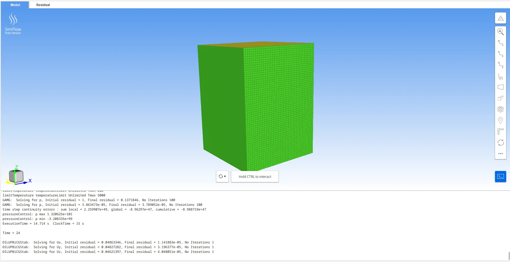
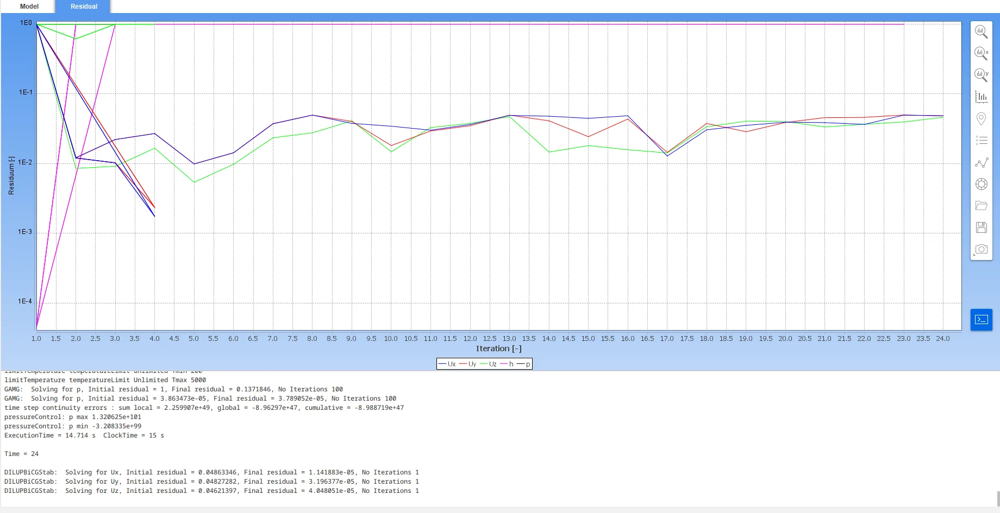

Bell Nozzle
I drew a bell nozzle in OpenSCAD, tried to simulate the flow through it in SimFlow and OpenFOAM, and printed it in PLA. The part printed. The CFD never converged, so most of this page is about the debugging.
Why I started it
I started this project while researching the engines and nozzles used on different spacecraft. I wanted to know why their shapes were different, and then I wanted to try designing my own bell nozzle.
I also wanted more experience with propulsion work, because it is the field I want to keep learning about. And if the design turned out well enough, I hoped it would be something I could show to engineers working in the field.
The physics that sets the shape
A bell nozzle has a converging section, a throat where the flow goes sonic, and a diverging section where the gas keeps speeding up. That last part is the one that confused me at first. While the flow is slower than sound, a narrowing passage speeds it up. Once it passes Mach 1 at the throat, only a widening passage does.
The relation that matters after that is the one between area ratio and exit Mach number for a given ratio of specific heats. You pick the Mach number you want at the exit, and it tells you how much bigger the exit has to be than the throat. I worked my sizing around a LOX/RP-1 case: an oxidizer to fuel ratio of 2.56, a 100 bar chamber at about 3615 K, expanding to 0.7 bar at roughly 3 km altitude, with a ratio of specific heats of 1.2 and a molecular weight of 22.65 g/mol. I started with a rough target of Mach 3.5 at the exit.
Designing the nozzle
I built the nozzle in OpenSCAD. The whole shape comes from a six-point profile, which is the exit, four points down the diverging wall, the throat, and the inlet. That profile gets revolved around the centerline with rotate_extrude(), then offset by a constant wall thickness so it is a shell instead of a solid.
Writing it as code rather than clicking it out in a CAD program meant I could move one point and see the whole contour change, and it let me hold the wall thickness and the overall scale as variables. The contour points themselves are typed in, so this is not a full nozzle generator. It is a profile I tuned by hand until the curve looked right.
The geometry I ended up with
- Throat radius
- 8.1 mm
- Exit radius
- 32.32 mm
- Overall height
- 84.48 mm
- Wall thickness
- 2.0 mm
- Area ratio
- 15.92
- Ideal Mach for that area ratio
- About 3.6 (isentropic relation, γ = 1.2)
Afterward I checked the shape I actually built against the theory. The exit radius divided by the throat radius is 3.99, so the geometric area ratio is 15.92. For a ratio of specific heats of 1.2, that area ratio corresponds to about Mach 3.6 in the ideal isentropic relation. Working the expansion from 100 bar down to 0.7 bar gives about Mach 3.59 and an area ratio near 15.6. So the nozzle I drew by hand ended up matching the 0.7 bar exit pressure closely, a little past my original Mach 3.5 estimate.
This compares my geometry with textbook theory. It is not a simulation result or a measurement, and it does not tell me how the printed part would perform.
Preparing the simulation
For CFD, the solver needs the gas inside the nozzle, not the walls around it. So I made a second OpenSCAD model of just the internal flow path and exported that as the geometry to simulate.
That went into SimFlow, which is the interface I used to set up and run the case. The solver underneath it is OpenFOAM, and I used ParaView to look at the results. SimFlow's free version caps a mesh at 200,000 nodes on a single core, and that limit shaped everything that came after.
Case setup
- Interface
- SimFlow 5.0.68
- Solver
- OpenFOAM v2212
- Mesh
- Hex box, 40 × 40 × 60, about 96,000 cells, uniform grading
- Domain
- 70 × 70 × 95 mm around the flow volume
- Turbulence
- Laminar
- Inlet
- Pressure inlet, 100 bar total
The mesh is the weak point, and I can see that more clearly now than I could then. It is a uniform box wrapped around the nozzle, so the cells are the same size at the throat as they are out in the corner of the domain, where nothing happens. The 0.7 bar exit target comes from my sizing notes. The 100 bar inlet I can still read straight off the case setup.

Debugging the CFD
What I tried
The early runs did not really run. OpenFOAM would abort inside the thermodynamics and report a temperature of about minus 1×1017 K, which is the solver saying the energy equation produced something meaningless and it will not carry on. That happened within one or two iterations.
At first I blamed the mesh, because it was obviously coarse. Then I went back through the pressure and temperature settings, then the boundary conditions, then the mesh again. Every change gave me another test case, and I ran a lot of them across one evening and the next afternoon. Eventually I added a temperature limiter to stop the solver aborting outright, which kept the case alive much longer. The limiter only hid the symptom. Whatever was causing it was still there.
Run history, April 2026
| When | How far it got |
|---|---|
| 2 April, 22:23 | Aborted at iteration 2, fatal error in the temperature solve |
| 2 April, 22:28 | Same abort, with 1000 iterations requested |
| 2 April, 23:03 | Iteration 1, laminar case, no limiters |
| 2 April, 23:19 | Iteration 2, continuity error already growing |
| 2 April, 23:29 | Iteration 20, with the temperature limiter in place |
| 3 April, 16:49 | Iteration 24, the furthest any run got, then it diverged |
Those six are the runs I happened to capture, out of a lot more. They go from cases that aborted at iteration 1 or 2 to cases that lasted into the twenties, and none of them reached an answer.
What the results showed
The simulation did not produce a valid flow solution. No velocity, Mach, or pressure field was ever written to disk. When I open the case in ParaView the only time step available is zero, which is the mesh before anything was solved. I did not numerically confirm choking at the throat, I did not confirm supersonic expansion, and I have nothing that would let me say whether the nozzle was over or under expanded.
In the final run the solver reported a continuity error of order 1049, a maximum pressure of about 10101, and a minimum pressure of about minus 1099. Physically meaningless numbers like these mean the case was falling apart. In the residual plot from that run, the three velocity residuals level off between 10-2 and 10-1, while the enthalpy residual stays pinned at 1. A converging case would show all of them dropping together.

So the CFD here records a setup and a failure. It does not validate the design, and the geometry check earlier on this page is the only number I can stand behind.
Printing it
The printing question is which way up. Printed the obvious way, inlet down, the inside of the bell is an overhang, so the slicer fills the expansion section with sacrificial support. Every contact point then leaves a mark on the surface the gas would flow along.
Turning the part over solves it. With the exit face flat on the plate, the wall never exceeds its own self-supporting angle, so nothing has to be built inside the bell. There is still a raft under the part where it meets the bed. What the orientation avoids is support material against the internal curve.
Print settings
- Printer
- Entina TINA2S (FDM)
- Material
- PLA
- Layer height
- 0.2 mm, 422 layers
- Infill
- 10%
- Print time
- 4 h 42 min, 11.2 m of filament
- Orientation
- Inverted, exit face on the build plate
The printed part
The nozzle printed successfully and I still have the finished part.

What I would change
Mesh the nozzle, not the box. The cells need to be small where the flow does something, through the throat and along the wall, and they can be much larger everywhere else. That is also the only way to stay under a node limit.
Check that the inlet, outlet, and wall are genuinely separate patches with the right condition on each, instead of assuming they are. Bring the case up gradually rather than starting a 100 bar inlet from ambient. Run it transient first, so the flow can establish before I ask a steady-state solver for an answer.
The test of whether any of that worked is simple: produce a Mach field and look at it. Until I can do that, I would not call the nozzle simulated.
What I learned
The early crashes were mostly frustrating, because the error told me something was wrong without telling me where. By the later runs I was much better at reading the error, changing one part of the setup, and testing it again. CFD turned out to be very sensitive to the mesh, the conditions, and the way the case is set up. Small changes there decided whether a run lasted one iteration or twenty-four.
I also learned to check my own geometry against the theory.